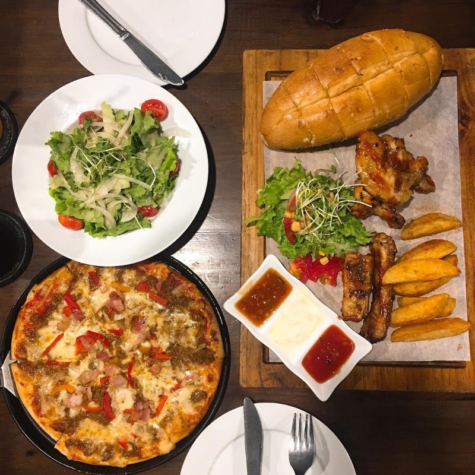
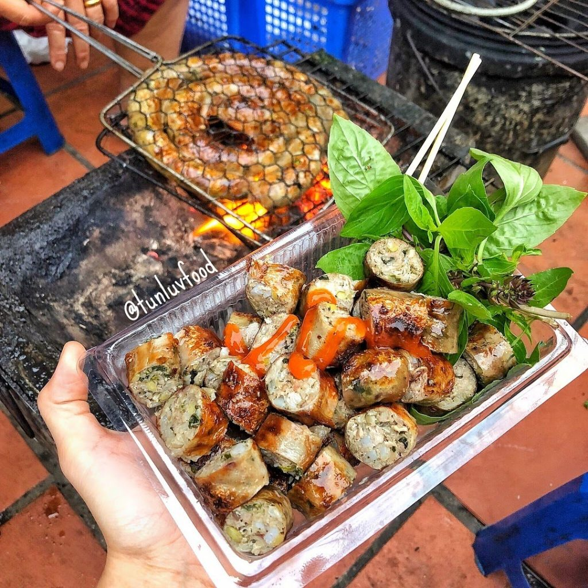
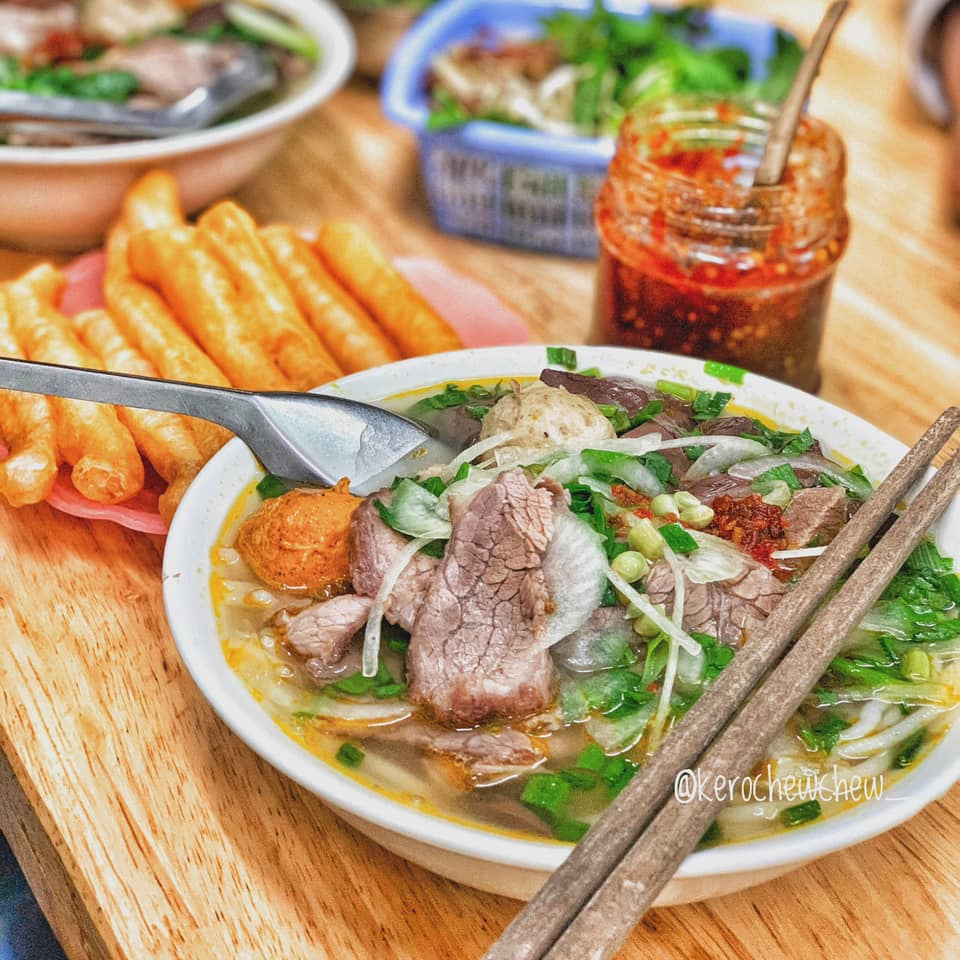
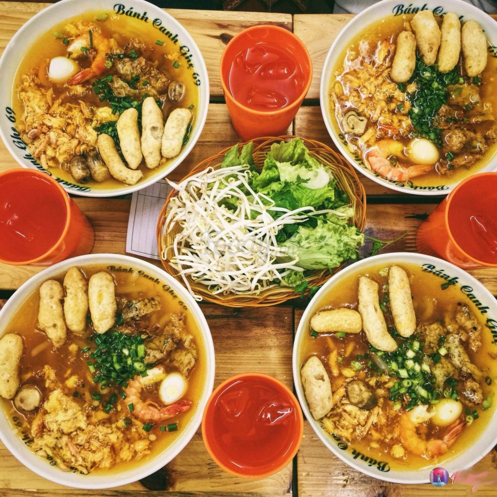
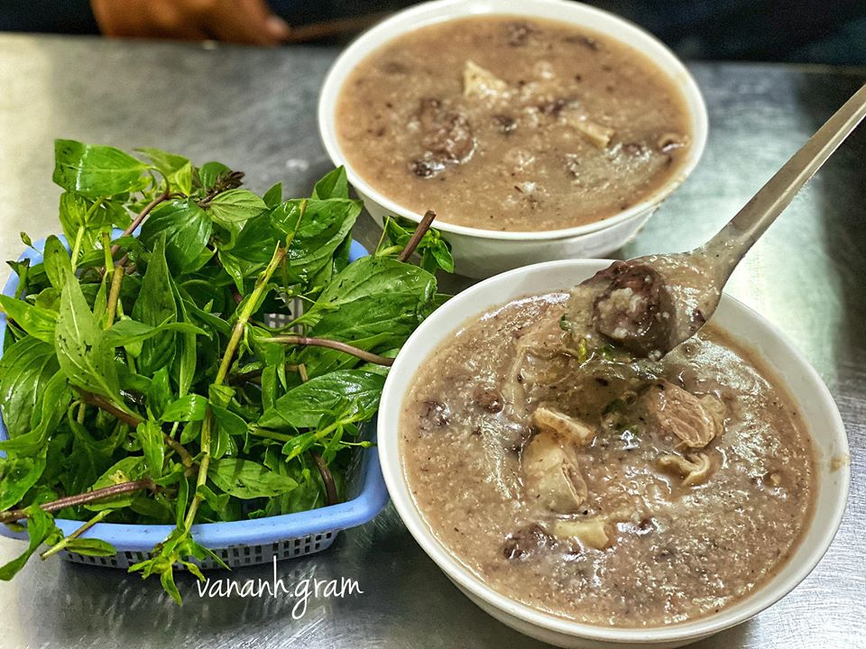
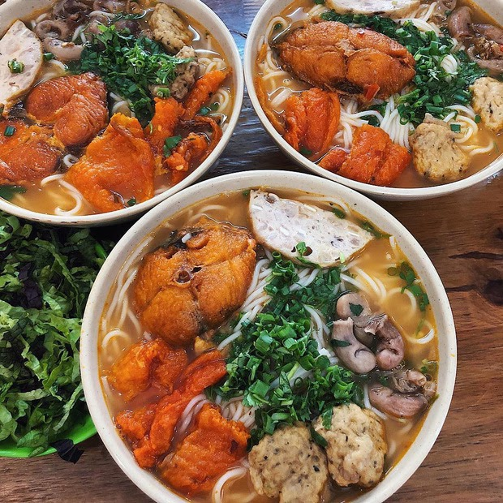
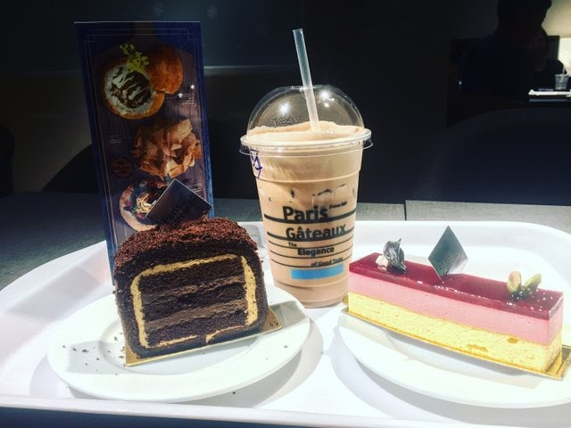
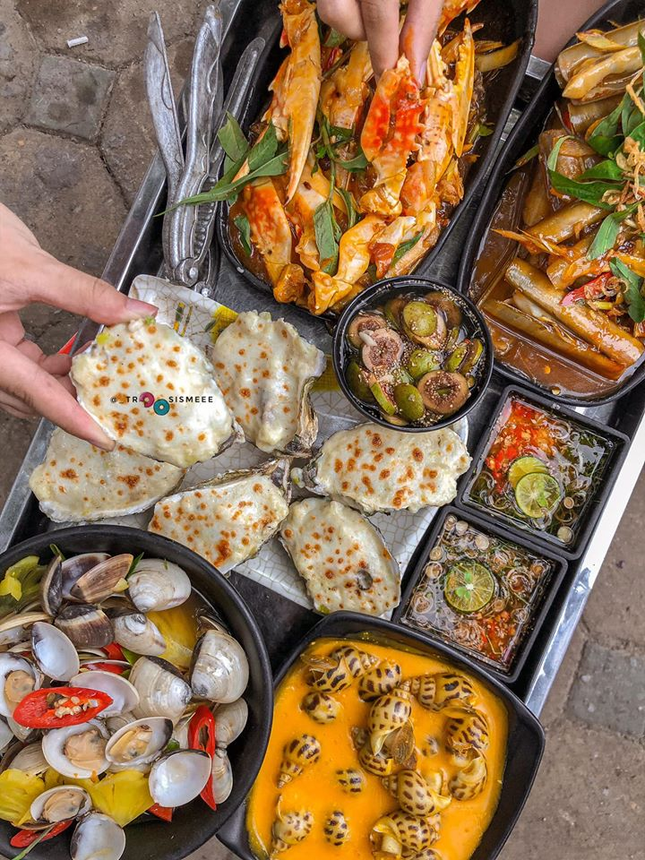
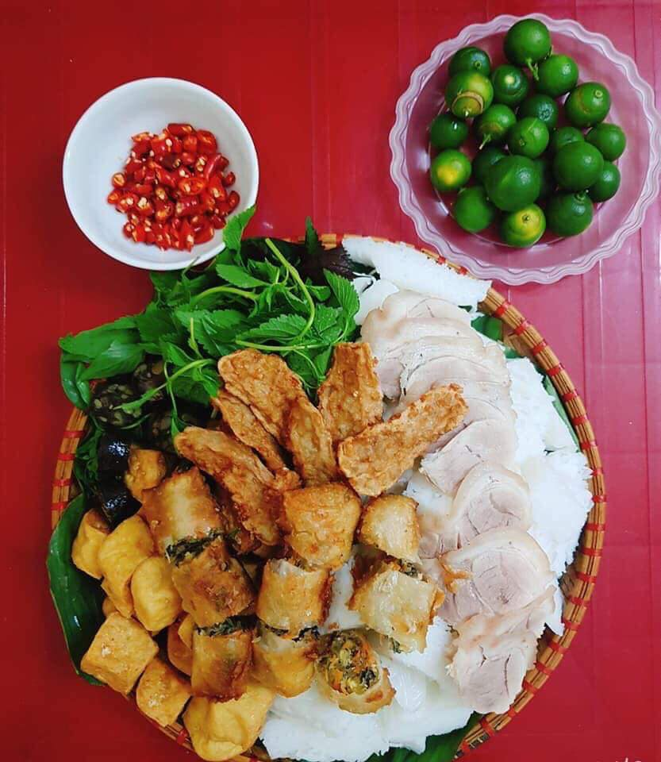
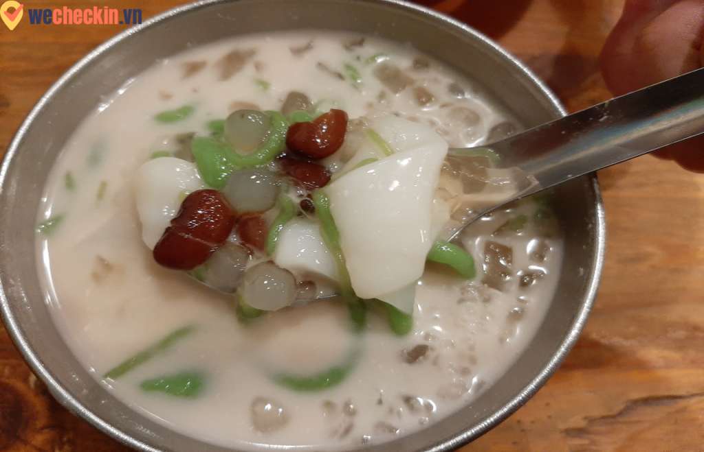

Những món ăn ngon được săn đón nhất
-
Những chiếc bánh pizza nổi tiếng
Quán có nhiều loại pizza bán rất chạy và được nhiều thực khách yêu thích như pizza jambon với viền phô mai, pizza alfresco, pizza bò, pizza xúc xích dứa… Nhân bánh thì luôn đầy topping nhìn rất ngon mắt. Ngoài ra quán cũng có nhiều các món ăn phụ khác như mì Ý, salad, beefsteak, sườn sốt nướng,… để làm đa dạng cho thực đơn của mình.
Thêm vào đó các chương trình khuyến mại của hãng này cũng được chạy thường xuyên và nhiều để thu hút thêm khách hàng. Tất cả các deal đều có giá hời và có lợi cho khách nên các bạn hãy theo dõi Tastyc thường xuyên để cập nhật các ưu đãi mới nhất nhé!
chắc chắn thực khách sẽ có những giây phút ăn uống tuyệt vời và khi ra về cũng sẽ không quên được hương vị của những món ăn nơi đây.
Tastyc chính là một cửa hàng pizza ở Hà Nội có giá cả phải chăng nhưng vẫn giữ được chất lượng đồ ăn và phục vụ tốt mà bạn nên ghé thăm.
-
Quán dồi sụn nướng ngon nhất Hà Nội
Dồi sụn nướng là sự kết hợp mới mẻ từ hai món ăn quen thuộc là dồi và sụn tạo ra hương vị thơm ngon, hấp dẫn vô cùng. Từ xa đi đến là có thể nhận diện được quán dồi sụn nướng ngon này nhờ hương thơm nức mũi. Dồi sụn nướng được nướng bằng than hoa nên có hương thơm quyến rũ vô cùng.
Vỏ ngoài thì nướng vàng và dai thích cực kỳ bao lấy phần nhân đầy ú ụ toàn là dồi sụn, sụn băm và lạc. Ăn kèm chút rau sống thì là đỉnh của đỉnh. Phần nhân được biến tấu đôi chút thay vì nhân mỡ, tiết truyền thống nên ăn đỡ ngán..
Món này khá được hội lai rai ưa thích mua về cho những bữa tiệc tụ tập cùng bạn bè, hoặc ăn vặt thì cũng là ý tưởng không tồi.
Dồi ăn kèm với nước sốt pha sẵn, gợi ý nữa là ăn kèm với bún cũng vô cùng ngon. Còn gì tuyệt vời hơn là được nhâm nhi cùng hội bạn bè những miếng dồi sụn hấp dẫn như này cơ chứ!
Bún bò Huế Hà Nội thơm ngon đúng chuẩn vị Huế
Là một quán bún bò Huế Hà Nội cực nổi tiếng mà hầu như ai là tín đồ của món “bún bò Huế” đều biết tới. Quán có hương vị chuẩn Huế là do chính người gốc Huế nấu. Quán có không gian rộng rãi, nhưng vào giờ cao điểm buổi trưa 11h – 14h và tối từ 18h – 20h rất là đông.
Nước dùng ở đây trong, vị đậm đà nhưng vẫn cảm nhận được độ thanh, mùi thơm của thịt. Bắp bò được thái lát mỏng, mọc và giò tiêu ăn kèm trong bát là một điểm cộng khá lớn vì rất chắc, thơm vị hạt tiêu.
Khi ăn bún bò Huế, mọi người nên ăn kèm với rau thơm, vị bùi bùi của hoa chuối, thanh thanh của giá đỗ sẽ làm khẩu vị tuyệt hơn. Sợi bún ở đây to, tròn và mềm, đúng chuẩn vị Huế luôn nha.
Quán bánh canh ghẹ Hà Nội cực nổi tiếng nhé.
Mọi người thường gọi quán Bánh canh ghẹ 69 là bánh canh ghẹ showbiz bởi chủ quán là diễn viên Vĩnh Xương và Anh Tuấn. Đây là một trong những quán bánh canh ghẹ Hà Nội ngon nhất và rất nổi tiếng.
Quán có 3 tầng, vào mùa hè mọi người thường lên tầng 2, 3 để ngồi vì có điều hòa, còn mùa đông thì mình ngồi ở đâu cũng được nhé.
Bát bánh canh ở đây rất đầy đặn
Bát canh ghẹ ở đây siêu to khổng lồ, sợi bánh canh luôn tươi ngon, dẻo, vị thanh, khi ăn tan trong miệng. Các bạn có thể chọn ăn bánh canh với thịt ghẹ đã được gỡ hoặc ăn bánh canh ghẹ nguyên con, tùy theo sở thích của mỗi người.
Ngoài bánh canh ghẹ ra, quán còn bán thêm các món hải sản khác như ngao hấp, ghẹ, tôm,… và các loại đồ uống đi kèm.
Quán cháo lòng hà nội ngon tê tái.
Quán cháo ở đây khá là sạch sẽ, chủ quán là một cụ ông cực kỳ nhiệt tình và thân thiện. Khi các bạn gọi đồ ăn thì lúc đó cụ mới làm nên sẽ phải đợi một lúc mới được ăn cháo chứ sẽ không lên đồ ngay như ở các quán khác.
Đồ ăn đồ ăn ở đây đặc biệt là nội tạng được làm khá kỹ, lòng ở đây sạch sẽ, khi ăn không bị đắng và có tí mùi nào. Cháo khá sánh và mịn, nhân đầy “ú ụ” kín bát làm cho mình có cảm giác không phải ăn cháo lòng mà là lòng cháo. Một bát thập cẩm ở đây: có tiết, lòng, dạ dày, lòng dồi, thịt dải.
Điểm trừ ở đây là quán khá bé và khuất nên tìm cũng hơi khó. Quán chỉ ngồi khoảng 10 người là chật nhưng về chất lượng cháo thì khỏi phải bàn nhé, xứng đáng là quán cháo lòng Hà Nội ngon nhất.
Có gì bên trong bát bún cá “gây sốt” của quán bún lòng cá cay Út Hà?
Quán bún lòng cá cay Út Hà là chuỗi cửa hàng bún lòng cá cay đầu tiên và ngon nhất tại Hà Nội. Được đánh giá cao về chất lượng đồ ăn cũng như giá cả không quá mắc,nên quán thu hút được rất nhiều thực khách đến thưởng thức những tô bún cá lòng cay trót ăn một lần mà nghiện một đời.
Những tô bún lòng cá cay đầy ú ụ, đủ sức chinh phục vị giác của bất cứ thực khách khó tính nào.
Quán bún lòng cá cay nằm trên vỉa hè và có chỗ đỗ xe cho thực khách
Quán lúc nào cũng đông nghìn nghịt khách bất chấp thời tiết quanh năm.
Đặc sản của quán chính là những tô bún ngon chuẩn vị Hà Nội xưa.
Ngoài ra, quán còn nhận được lượng review khủng cũng như các đánh giá vô cùng tích cực của thực khách.
Quán bánh ngon ở Hà Nội dành cho những tín đồ mê bánh.
Đối với nhiều người, Paris Gateaux chính là cửa hiệu bánh quen thuộc, thân thương. Vào bất cứ thời điểm nào trong ngày thì Paris Gateaux cũng có thể là điểm đến quen thuộc của mọi khách hàng. Họ ghé vào Paris Gateaux để mua cho mình những ổ bánh mì xúc xích nóng hôi hổi vào sáng sớm đi làm.
Hoặc quán bánh ngon ở Hà Nội “vạn người mê” này trở thành sự lựa chọn lý tưởng của những cô nàng eat clean có nhu cầu mua cho mình những lát bánh mì đen hảo hạng vào buổi trưa. Đến tối, những chiếc bánh ga tô lãng mạn của Paris Gateaux lại là món quà “thay lời muốn nói” của những người đàn ông vào dịp sinh nhật người phụ nữ của mình.
Các sản phẩm của Paris Gateaux đều mang đến dư vị ngọt ngào, hạnh phúc khó quên
Cứ như vậy, sản phẩm bánh Paris Gateaux mang đến niềm hạnh phúc cho các gia đình, cặp đôi, bạn bè, hội nhóm,…Và nó mang cả tinh hoa, hơi thở của nghề bánh nước Pháp xa xôi đến Việt Nam để nhà nhà, người người có thể thưởng thức.
Quán bánh ngon ở Hà Nội Paris Gateaux chính là thiên đường của các loại bánh.
Ốc Trang Hải Phòng là quán ốc ngon Hà Nội
Quán nằm ở vị trí dễ tìm, trước quán có một biển hiệu to để cho khách dễ nhìn thấy. Nằm ở ngay ven hồ Đắc Di nên có không gian thoáng mát, những lúc trời mát mà ngồi vỉa hè ăn ốc thì đúng “chuẩn bài” luôn.
Ốc Trang Hải Phòng là quán ốc ngon Hà Nội với giá không quá đắt, rất đông khách nên các bạn cần đến sớm để có chỗ ngồi view đẹp. Đặc biệt là ốc vặn hấp, ngao trắng hấp thái chỉ có 20k/bát.
Chủ quán là người Hải Phòng nên vị các món đều chuẩn. Ở đây đa dạng các món ốc từ ốc mít, ốc đá, ốc móng tay, len mỡ,…rồi đến ngao, sò, hàu, bề bề,… Ốc ở đây to, thơm mùi sả, bê ra còn hóng nổi. Đặc biệt là nước chấm thơm, hơi cay nhè nhẹ. Quán có cả món sung muối ăn cùng ốc rất ngon.
Quán bún đậu ngon Hà Nội – Bún đậu Cố Hương
Cố Hương là một trong những quán bún đậu ngon ở Hà Nội. Các review về quán bún đậu này đều được đánh giá khá tốt. Không gian quán rộng rãi và sạch sẽ.
Bún đậu ở đây sẽ được chủ quán chế biến từ trước, lúc nào khách đến sẽ chiên lại cho nóng nên thời gian ra đồ rất nhanh, chỉ 5 – 10 phút gọi đồ.
Đậu ở đây được chiên vừa phải nên nóng, giòn, chả cốm béo ngậy, đặc biệt nem ở đây ăn giòn mà không bị ngán, thịt chân giò thì mềm.
Giá ở đây trung bình là 35k/xuất, cũng không phải là quá đắt cho một bữa trưa. Đồ uống có coca và sữa đậu. Có cả trà đá và kẹo singum miễn phí nữa.
Chè Dừa Thái Lan – Thức giải nhiệt cho mọi lứa tuổi
Chè Dừa Thái Lan tuy là một món tráng miệng có công dụng giải nhiệt bắt nguồn từ xứ sở Chùa Vàng nhưng với hương vị ngọt ngậy, thanh mát đặc trưng của cốt dừa sánh mịn kết hợp với chút vị thơm của lá dứa trong những sợi chè Thái, món ăn này đã trở nên rất được ưa chuộng và phổ biến với con người Việt Nam, đặc biệt là tầng lớp trẻ như sinh viên và học sinh.
Chè dừa là món ăn chiếm được cảm tình của rất nhiều thực khách
Món chè dừa Thái Lan từ khi du nhập vào nước ta đến nay đã được người Việt biến đổi và gọi bằng những cái tên rất riêng như: Chè bánh lọt, Chè giun, Chè dừa,…. Chính vì vậy, hiện nay để tìm ăn được món chè này không khó bởi nhu cầu giải nhiệt và ăn uống của không chỉ người dân Sài thành nói riêng mà còn của cả nước nói chung.
Tuy nhiên, nếu bạn muốn thưởng thức hương vị chè dừa chuẩn vị Thái nhưng lại có chút biến tấu khéo léo phù hợp hơn với gu ẩm thực của người Việt thì nên ghé qua quán Chè Dừa Thái Lan tại đầu đường Nguyễn Phong Sắc (nút giao với Xuân Thủy).
Chè Dừa Thái Lan – Thương hiệu rất được ưa chuộng của người dân khu Cầu Giấy
Lời kết
Thỉnh thoảng cũng có những dịp bạn cần ra ngoài đi chơi với bạn bè, đi hẹn hò với người yêu hay chỉ đơn giản là hôm nay lười quá ra ngoài ăn cho đỡ phải nấu thì những quán ăn trên có lẽ sẽ rất phù hợp để bạn có thể vừa ăn no bụng vừa trò chuyện với mọi người. Hy vọng bài viết này sẽ có ích cho các bạn.